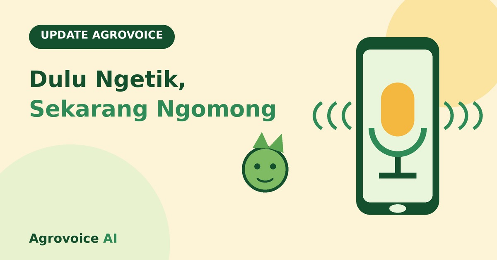

Dinas Pertanian dan Perikanan Dorong Digitalisasi Pelaporan Penyuluh Lapangan
Kolaborasi dinas dengan para penyuluh lapangan dalam mempercepat verifikasi data kelompok tani melalui platform pencatatan suara.

Dalam rangka mempercepat modernisasi pendataan sektor pertanian, peternakan, dan perikanan, dinas terkait terus mendorong transformasi digital bagi para Penyuluh Pertanian Lapangan (PPL) dan tenaga teknis lapangan. Salah satu kendala utama pelaporan manual selama ini adalah waktu yang tersita untuk mengetik ulang catatan lapangan di kantor.
1. Memangkas Birokrasi Pelaporan Lapangan
Sebelum adanya platform digital, penyuluh sering menghabiskan hingga 30% jam kerja mereka hanya untuk urusan administrasi kertas. Dengan adopsi teknologi pencatatan suara langsung dari lokasi binaan, laporan dapat diselesaikan saat kunjungan berlangsung tanpa perlu menunda hingga kembali ke Balai Penyuluhan Pertanian (BPP).
2. Otentikasi dan Akurasi Data Berbasis Lokasi
Setiap kunjungan kini dilengkapi dengan penanda lokasi GPS presisi, foto bukti lapangan yang tidak dapat dimanipulasi, serta cap waktu otomatis. Hal ini memberikan transparansi penuh bagi pimpinan dinas dalam memantau sebaran kegiatan penyuluhan serta respon cepat terhadap laporan serangan hama atau wabah penyakit ternak.
3. Dukungan Agrovoice untuk Program Daerah
Platform Agrovoice dinilai menjadi jembatan efektif antara petani di pelosok dan pengambil kebijakan di dinas. Dengan antarmuka yang ramah pengguna, kemampuan bekerja tanpa sinyal (offline-first), serta dukungan bahasa daerah, teknologi ini dapat dioperasikan oleh seluruh lapisan penyuluh lintas generasi.